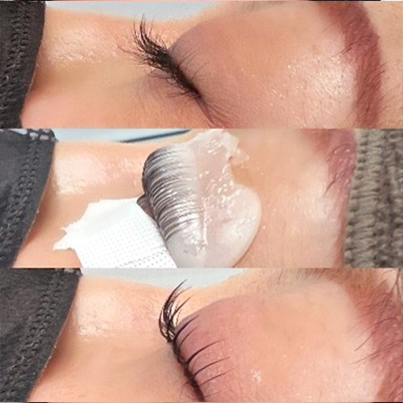

フーラエステティックアカデミー 東京校
〒150-0001東京都渋谷区神宮前6-19-20 第15荒井ビル7階
渋谷駅B1出口より徒歩2分


LASH LIFT
巻き上げ完全攻略セミナー
もうロッドを外す瞬間、不安にならない、高密着を実現する『極（きわみ）』の巻き上げ術
COURSE OVERVIEWセミナー概要
RECOMMENDEDこんな方におすすめ
COURSE BENEFITSコースの詳細


巻き上げ理論を理解
ロッド角度・毛流れ・テンションの関係性を学び、仕上がりをコントロールするための基礎となる考え方を習得します。理論から理解することで、施術の再現性を高めます。


仕上がりの安定
ロッド角度・テンション・毛流れ設計を理解することで仕上がりのばらつきを減らし、安定した美しい仕上がりを実現します。


巻き上げ技術の理解を深める
ラッシュリフトの巻き上げ技術は重要でありながら、その理論まで詳しく学べる機会は多くありません。 このコースでは巻き上げの考え方や仕組みを整理し、技術への理解をより深めていきます。


サロンワークの自信につながる
ロッドを外す瞬間の不安を減らし、どんなお客様にも自信を持って施術できる技術を目指します。
CURRICULUMコース内容
¥35,200
¥28,600
ラッシュリフトの仕上がりを左右する巻き上げ設計について解説。
ロッドの角度とカールの関係を理解。
均一な仕上がりを作るための毛流れコントロール。
ばらつき・上がらない原因と改善方法。
均一な軟化をつくるためのポイント。
まつ毛の状態を見極め、適切なデザインを考える。
まつ毛の長さや生え方に合わせたロッド選定。
ロッド角度を活かした巻き上げ技術。
均一な仕上がりを作る整列技術。

※画像はサンプルです
ご受講される皆さまへお願い
ACCESS会場アクセス
フーラエステティックアカデミー 東京校
〒150-0001フーラストア大阪梅田店
〒530-0051